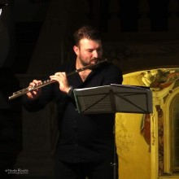

VERANSTALTUNGEN
Der Förderverein Emil Schumacher Museum e.V. bietet gemeinsam mit dem Emil Schumacher Museum regelmäßig attraktive Veranstaltungen an. Diese Angebote können Sie auch besuchen und uns dabei kennen lernen, wenn Sie noch kein Mitglied im Förderverein sind.
KLASSIK & JAZZ IM ESM
Mit „Klassik & Jazz“ öffnet sich das Emil Schumacher Museum auch anderen Kunstsparten und setzt damit einen musikalischen Akzent. Unterstützt wird die Veranstaltungsreihe vom Kulturverein Westfalen e.V.
Die Besucher haben Gelegenheit, vor einem ansprechenden Konzert die aktuelle Ausstellung des Museums zu besichtigen. Sofern nicht anders vermerkt, wird kein zusätzlicher Eintritt für das Konzert erhoben. Freiwillige Spenden sind selbstverständlich gern willkommen.
Die nächsten Konzerttermine finden Sie hier.
11.05.2023, 18 UHR, KONZERT
KLASSIK & JAZZ IM ESM
CHRONATIC QUARTETT
Der Karneval der Tiere
KLASSIK & JAZZ IM ESM
CHRONATIC QUARTETT
Schnittstelle zwischen Klassischer Musik und Popkultur
Im Jahr des 100. Todestages des französischen Komponisten Camille Saint-Säens haben sich die Musiker des Chronatic Quartett mit dessen wohl bekanntestem und beliebtestem Werk, dem „Karneval der Tiere“, auseinandergesetzt und die Orchestersuite für ihre ungewöhnliche Bandbesetzung - Geige, Klavier, Bass und Schlagzeug - umgeschrieben. Dabei adaptieren sie die Stücke des Originals nicht eins zu eins, sondern geben jedem in der Suite repräsentierten Tier eine eigene kompositorische Interpretation mit. Die tierischen Karnevalsgäste - Kängurus, Fische, Schildkröten, Löwen, Hühner und viele mehr - sind eine augenzwinkernde Persiflage auf Saint-Säens Komponisten-Kollegen. Das 2017 gegründete Chronatic Quartett bewegt sich auf der Schnittstelle zwischen klassischer Musik und Popkultur. In ihrer ungewöhnlichen Besetzung (Klavier/Bass/Violine/Schlagzeug) erfassen die vier Musiker große Werke der Klassik neu und interpretieren, zitieren und rekomponieren diese auf eigene, zeitgemäße Weise. Ein Konzert in der Schnittstelle zwischen Tradition, Moderne, Klassik, Pop & Jazz.
Eintritt frei
08.06.2023, 18 UHR, KONZERT
KLASSIK & JAZZ IM ESM
CANTABILITÁE E VIRTUOSISMO
Sacha De Ritis & Michela De Amicis (Italien)
KLASSIK & JAZZ IM ESM
CANTABILITÁE E VIRTUOSISMO
Querflöte und Klavier
In dem Programm der beiden Italiener findet man ein Werk des großen Kompositionstalentes Cécile Chaminade (1857-1944). Ihre erste Komposition veröffentlichte sie bereits im Alter von 12 Jahren. Georges Bizet, ein Freund der Familie, prophezeite ihr eine große Zukunft. Das Flötenkonzert, das 1902 für Flöte und Klavier komponiert und später für Flöte und Orchester bearbeitet wurde, war eine Auftragskomposition vom Pariser Konservatorium, um eine besondere Herausforderung an die Studenten der Querflöte zu stellen. Weitere Werke des Abends sind von den Komponisten Karg Elert und Giacomo Puccini.
Bereits in sehr jungen Jahren schließt Michela De Amicis ihr Klavierstudium mit Bravour am Konservatorium "Giordano" von Foggia unter der Leitung von Professor Rachele Marchegiani ab.
2005 erhielt sie eine Auszeichnung „in Anerkennung der Verbreitung von
Cultura Italiana“ der Dante Alighieri Society of Massachusetts.
Der Flötist Sacha De Ritis begann schon in jungen Jahren mit dem Flötenunterricht bei Sandro Carbone am Konservatorium "Luisa D'Annunzio" in Pescara den er mit Auszeichnung abschloss.
Als Konzertsolist ist er in den größten nationalen und internationalen Konzertsälen zu Hause.
Er hat für Naxos America eine CD mit Ausschnitten aus den schönsten italienischen Opern aufgenommen.
Eintritt frei.
